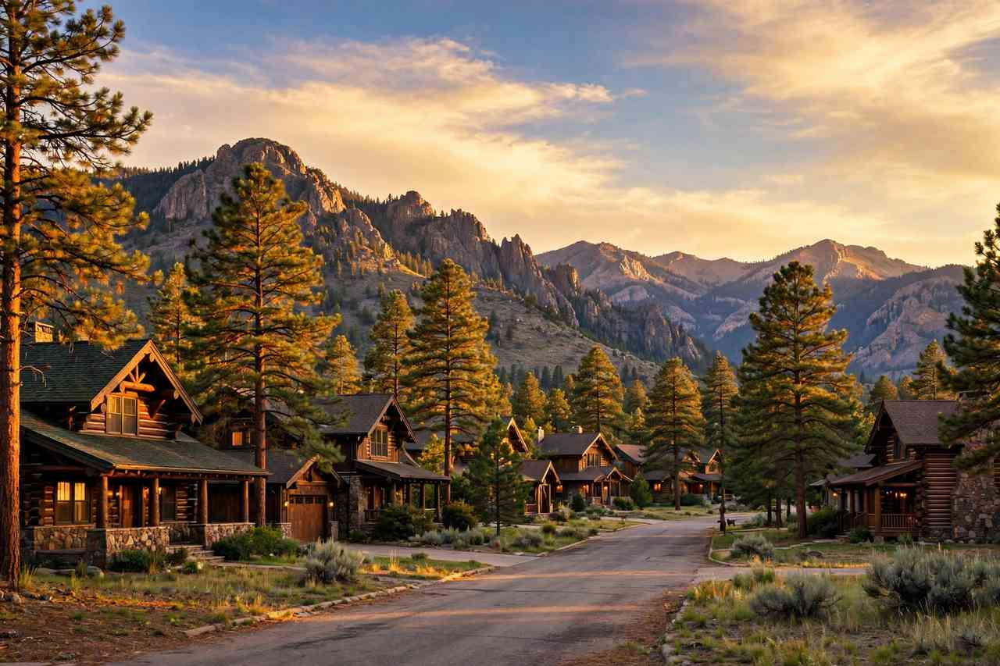

Rodent Control · Arlee, MT
Fast Rodent Control in Arlee, MT
Hearing scratching at night or finding droppings in Arlee? Murvo is a rodent-only specialist offering same-day service from local crews. We identify the species, remove the infestation, clean up the mess, and exclude rodents for good. Pricing is flat-rate and quoted in writing, the work is guaranteed in writing, and coverage extends across Lake County for homes and businesses alike. Local crews cover 1 ZIP codes in the Arlee area, from Wye to the far side of Lake County.
24/7Availability
1ZIP codes covered
Same-dayResponse
Licensed · Upfront options · Written guarantees · Fully insured
Arlee at a glance
Local Rodent Control for Arlee, MT.
Lake County
Countywestern Montana
RegionBillings · 280 mi
Nearest metro105 miles northwest of Helena
From Helena1
ZIP codes covered Service by service in Arlee
Rodent Control Services Available in Arlee
Thirty rodent services, one local standard in Arlee: inspection-led, exclusion-first, and quoted in writing before work begins. Browse the full list for Lake County below - each section explains what the service involves here, what it typically costs nationally, and how fast we can start.
- 01Rodent Control↗
- 02Rodent Inspection↗
- 03Rodent Removal↗
- 04Rodent Exclusion↗
- 05Rodent Proofing↗
- 06Rat Control↗
- 07Mice Control↗
- 08Mouse Removal↗
- 09Rat Removal↗
- 10Rodent Trapping↗
- 11Rodent Baiting↗
- 12Rodenticide Application↗
- 13Attic Rodent Removal↗
- 14Crawl Space Rodent Removal↗
- 15Wall Rodent Removal↗
- 16Kitchen Rodent Control↗
- 17Garage Rodent Control↗
- 18Commercial Rodent Control↗
- 19Residential Rodent Control↗
- 20Emergency Rodent Removal↗
- 21Same-Day Rodent Control↗
- 22Rodent Damage Repair↗
- 23Rodent Waste Cleanup↗
- 24Rodent Disinfection↗
- 25Rodent Odor Removal↗
- 26Dead Rodent Removal↗
- 27Rodent Dropping Cleanup↗
- 28Rodent Exclusion for Roofs↗
- 29Rodent Exclusion for Vents↗
- 30Rodent Exclusion for Chimneys↗
Rodent Control in Arlee
Rodent Control in Arlee
In Arlee, suburban homes at the foothill interface, cabins and second homes, and older in-town homes with basements give rodents warmth, shelter, and easy routes through garage door seals, foundation and sill gaps, roofline gaps at snow-loaded eaves, and vents on cabins and outbuildings, especially once nights turn cold across Lake County. Our licensed, insured technicians identify the species, map active runways, and build a control plan around your home rather than a generic spray. Every visit is documented with photos, trap records, and clear next steps for your household.
Homeowners in Arlee call Murvo for rodent control because the problem here is specific: House mouse (Mus musculus) pressure around suburban homes at the foothill interface, cabins and second homes, and older in-town homes with basements, tight access at garage door seals, foundation and sill gaps, roofline gaps at snow-loaded eaves, and vents on cabins and outbuildings, and activity that follows the local season. Our Lake County crews diagnose the real source before recommending work, explain the options in plain language, and quote one flat rate in writing. Across Arlee - including Evaro, Ravalli - every visit is backed by licensed, insured technicians and our written workmanship guarantee. Seasonal timing matters for rodent control in Arlee: rodents surge in Arlee from October through April.
Consider how a visit unfolds. Throughout, photographs and written notes keep you informed, so progress is something you can see and verify rather than something you are asked to trust. The technician walks the exterior before touching anything indoors, noting gaps, rub marks, and food sources. Inside, attic and crawl-space evidence shapes the trapping plan, which is adjusted visit by visit as numbers change. Cleanup guidance covers contaminated areas safely, and exclusion work closes the route permanently. Photographs taken at the start make those later comparisons honest, because memory alone tends to blur the details.
When you call, tell us what you have seen and when the noises happen. Once you approve, trapping and sealing are booked in sequence, monitoring is scheduled, and the guarantee is left with you in writing at completion. That detail shapes the first visit. Your technician arrives as scheduled, inspects, and lays out findings before quoting. Keep the visit notes we leave behind; together they form a clear record of findings, approvals, completed work, and the monitoring results that closed the job.
In most of Arlee, we can offer a same-day appointment for rodent control, and our lines are open 24/7 for urgent cases like scratching in the walls or a rodent in a living area. Your technician inspects first, explains the plan, and quotes a flat rate in writing before any work begins, so help starts fast without surprises. An Arlee inspection confirms it on site - dropping size, gnaw marks, and entry points tell the story quickly.
Murvo does not quote rodent control sight unseen, because species, activity, and sealing needs change the work involved. After inspection you get one flat-rate written quote, and that is the figure you pay. As national context only, Angi's 2026 figures put rat and mouse removal and control at an average of $396, with a typical range of $189 to $655 — a benchmark, not a Murvo price.
Rodent Inspection in Arlee
Rodent Inspection in Arlee
You do not need to see a rodent to have a rodent problem in Arlee. Droppings in the attic, gnaw marks near garage door seals, foundation and sill gaps, roofline gaps at snow-loaded eaves, and vents on cabins and outbuildings, or noises after dark are enough reason to book a rodent inspection. Murvo technicians check the whole property, photograph what they find, and give you a prioritized plan plus a flat-rate written quote for any work recommended.
Homeowners in Arlee call Murvo for rodent inspection because the problem here is specific: House mouse (Mus musculus) pressure around suburban homes at the foothill interface, cabins and second homes, and older in-town homes with basements, tight access at garage door seals, foundation and sill gaps, roofline gaps at snow-loaded eaves, and vents on cabins and outbuildings, and activity that follows the local season. Our Lake County crews diagnose the real source before recommending work, explain the options in plain language, and quote one flat rate in writing. Across Arlee - including Evaro, Ravalli - every visit is backed by licensed, insured technicians and our written workmanship guarantee. Homes near Wye tend to show activity first in Arlee, which is why inspections start with garage door seals, foundation and sill gaps, roofline gaps at snow-loaded eaves, and vents on cabins and outbuildings.
We listen first: when you hear noises, and where, often points straight to the most active nesting areas. Technicians then trace active runways, identify whether droppings belong to House mouse (Mus musculus) or Deer mouse (Peromyscus maniculatus), and check insulation and wiring for damage. The visit ends with a written report covering species, entry points, contamination, and the removal and exclusion steps we recommend, each with a flat-rate price. That detail stops you paying for treatment aimed at the wrong species or the wrong part of the building.
Your part is simple: point out noises, droppings, and any past problems. A background-checked technician arrives on time, protects access areas, and inspects inside and out against a set checklist. Before leaving, you walk through the evidence together, discuss priorities, and decide what happens next, with no obligation attached. Ours is everything else. If you decide to proceed, those findings become the working plan, so no second survey is needed before approved repairs begin.
Inspections are the fastest way we help in Arlee: same-day appointments are available in most areas, and urgent calls are answered 24/7. A typical rodent inspection takes under an hour for most homes, and you leave the visit with photos, written findings, and a flat-rate quote for any work we recommend, so decisions never wait on us. If you are seeing signs now, an inspection this week is the fastest way to know which situation you are in.
Your exact rodent inspection price is confirmed before we visit, and any follow-up work is quoted as a flat rate in writing after the inspection — no hourly billing. For context, Angi's 2026 data puts a professional rodent inspection nationally at $100 to $200, often credited toward the job if you proceed.
Rodent Removal in Arlee
Rodent Removal in Arlee
How quickly should you act once droppings appear in living areas? Promptly, because contamination builds daily and young rodents mature fast. Murvo responds with licensed, insured, background-checked technicians who remove animals hygienically, explain when each room is safe again, and back the completed removal with a written workmanship guarantee.
Homeowners in Arlee call Murvo for rodent removal because the problem here is specific: House mouse (Mus musculus) pressure around suburban homes at the foothill interface, cabins and second homes, and older in-town homes with basements, tight access at garage door seals, foundation and sill gaps, roofline gaps at snow-loaded eaves, and vents on cabins and outbuildings, and activity that follows the local season. Our Lake County crews diagnose the real source before recommending work, explain the options in plain language, and quote one flat rate in writing. Across Arlee - including Evaro, Ravalli - every visit is backed by licensed, insured technicians and our written workmanship guarantee. Seasonal timing matters for rodent removal in Arlee: rodents surge in Arlee from October through April.
Removal starts with an assessment of species, numbers, and access routes across attics, wall voids, garages, and kitchens. Catch records show progress clearly instead of relying on guesswork. Removal is followed immediately by entry-point exclusion, because new rodents will replace removed ones through any gap left open, and disinfection is arranged after heavy activity. Once you approve the written quote, technicians set traps along proven runways, check them on schedule, and remove animals promptly and hygienically. Photos document each stage for you.
Same-day removal appointments are available across much of Arlee for active infestations. Follow-up checks are booked before we leave, contaminated areas are made safe, and monitoring confirms the property is clear before we sign off. Every stage is explained in plain language as work proceeds. After a quick inspection, your background-checked technician explains the trapping plan and gives you a flat-rate written quote; work starts only with your approval. You keep copies of all visit records.
For active infestations in Arlee, rodent removal can usually start the same day you call, and our team answers 24/7 when a rodent is loose in a living area. The first visit confirms activity and sets traps straight away; return visits then clear and reset them until monitoring shows the property is completely clear. In Lake County, most cases involve the House mouse (Mus musculus) and the Deer mouse (Peromyscus maniculatus), so the inspection focuses on their routes first.
Cost depends on the species, how many animals are active, and how much sealing the home needs afterwards, so Murvo inspects first and quotes one flat rate in writing. For national context only, Angi's 2026 data averages rat and mouse removal at $396, typically $189 to $655. That benchmark is not a Murvo price; your written quote is the exact figure.
Rodent Exclusion in Arlee
Rodent Exclusion in Arlee
Exclusion is also the safest long-term strategy for Arlee homes, because a sealed house needs far less bait and fewer repeat treatments. Murvo's licensed, insured crews finish roof, vent, and chimney work to weatherproof standards, walk every sealed opening with you afterwards, and back the result with a written workmanship guarantee you can hold us to.
When you need rodent exclusion in Arlee, the job starts with what is actually happening in your part of Lake County. Murvo crews work Arlee every week, so they know how House mouse (Mus musculus) and Deer mouse (Peromyscus maniculatus) behave around suburban homes at the foothill interface, cabins and second homes, and older in-town homes with basements here - and where they get in: garage door seals, foundation and sill gaps, roofline gaps at snow-loaded eaves, and vents on cabins and outbuildings. We arrive equipped for the full job, confirm the flat rate in writing before work begins, and cover the whole Arlee area, including Evaro, Ravalli. No call-center runaround and no open-ended hourly billing - just a local crew, a clear plan, and a written quote you approve first. Coverage for rodent exclusion spans 1 ZIP codes in Lake County, including 59821.
Start with a hard rule: nothing gets sealed while animals remain inside. Each opening receives its own treatment, from packed copper mesh in irregular gaps to hardware cloth across vents and flashing at roof junctions. Door sweeps close the obvious routes, and smaller cracks receive durable sealant chosen for exterior exposure. Technicians confirm the home is clear through trapping and monitoring, then survey the structure junction by junction, because seams between materials open as buildings settle. A written inventory ties each photograph to a location, so future checks can revisit precisely the same points.
Before sealing day, confirm pets are secured and access to the roofline and foundation is clear. Afterwards you receive the photographs, the guarantee, and a date for the follow-up check that confirms everything is holding as intended. The crew then works through the agreed list, checks that no animals remain inside, and fits each seal cleanly. If monitoring ever finds fresh activity at a sealed point, that written inventory tells us exactly what to inspect first.
The first step is a survey, and in Arlee we can often schedule that survey the same day you call about rodent exclusion. Sealing follows once active animals are cleared — nothing is ever sealed inside — and most homes are fully sealed within days, with entry points near wiring or food areas handled first. In Lake County, activity follows the local season, so timing the work matters as much as the method.
After the survey of your Arlee home, every opening that needs sealing is listed and priced as one flat-rate written quote, so you pay only for the work your property needs. For national context, Angi's 2026 data puts basic exclusion at $200 to $600 depending on access and the number of openings; that benchmark is not a Murvo price.
Rodent Proofing in Arlee
Rodent Proofing in Arlee
The best rodent problem is the one that never starts. Rodent proofing in Arlee hardens your home before House mouse (Mus musculus) and Deer mouse (Peromyscus maniculatus) move in: sealing gaps, screening vents, fitting door sweeps, and removing the food and shelter that attract them. Murvo surveys the whole property, prioritizes the work, and gives one flat-rate written quote for the work.
Homeowners in Arlee call Murvo for rodent proofing because the problem here is specific: House mouse (Mus musculus) pressure around suburban homes at the foothill interface, cabins and second homes, and older in-town homes with basements, tight access at garage door seals, foundation and sill gaps, roofline gaps at snow-loaded eaves, and vents on cabins and outbuildings, and activity that follows the local season. Our Lake County crews diagnose the real source before recommending work, explain the options in plain language, and quote one flat rate in writing. Across Arlee - including Evaro, Ravalli - every visit is backed by licensed, insured technicians and our written workmanship guarantee. Homes near Wye tend to show activity first in Arlee, which is why inspections start with garage door seals, foundation and sill gaps, roofline gaps at snow-loaded eaves, and vents on cabins and outbuildings.
Materials follow the same standard as full exclusion work: copper mesh packed into irregular gaps, hardware cloth over openings that need airflow, flashing at vulnerable junctions, and sealants matched to smaller cracks. The written plan photographs each weakness, states who handles it, and schedules a seasonal re-check, since new gaps appear as a building ages and proofing works best as maintenance. Around kitchens, pipe runs and the voids behind units receive particular attention, because warmth and food meet there. Seasonal timing is noted in the plan as well.
On proofing day, expect one tidy visit for most homes. Agreed sealing and screening are completed, sweeps are fitted, and attractant advice is tailored to your garage, kitchen, and yard. Before leaving, you walk the finished work together, confirm the guarantee in writing, and book the seasonal re-check that keeps the protection current year after year. The re-check is not a formality, because it catches shifted sweeps, damaged screens, and new gaps before rodents discover them first.
Proofing is planned work rather than an emergency, but you can still move fast: rodent proofing surveys in Arlee are often available the same day and always within a few days. Once you approve the plan, most work is finished in a single visit, ideally before colder weather drives rodents indoors. In Lake County, most cases involve the House mouse (Mus musculus) and the Deer mouse (Peromyscus maniculatus), so the inspection focuses on their routes first.
For national context, Angi's 2026 data puts exclusion, the core of proofing, at $200 to $600 for basic work. That figure is a benchmark, not a Murvo price. After surveying your Arlee property, we separate quick homeowner wins from specialist sealing and quote the professional work as one flat rate in writing, so you can stage spending sensibly.
Rat Control in Arlee
Rat Control in Arlee
Rats are cautious, strong, and destructive, and a Arlee sighting usually means a settled group is already traveling your fences, pipes, and rooflines nightly. Murvo's rat control identifies the species, maps those routes, and combines pre-baited trapping with removal and exclusion. You approve one flat-rate written quote before work starts, and monitoring continues until activity fully stops.
When you need rat control in Arlee, the job starts with what is actually happening in your part of Lake County. Murvo crews work Arlee every week, so they know how House mouse (Mus musculus) and Deer mouse (Peromyscus maniculatus) behave around suburban homes at the foothill interface, cabins and second homes, and older in-town homes with basements here - and where they get in: garage door seals, foundation and sill gaps, roofline gaps at snow-loaded eaves, and vents on cabins and outbuildings. We arrive equipped for the full job, confirm the flat rate in writing before work begins, and cover the whole Arlee area, including Evaro, Ravalli. No call-center runaround and no open-ended hourly billing - just a local crew, a clear plan, and a written quote you approve first. The Arlee crews who handle rat control also handle the follow-through - proofing, cleanup, and monitoring - so one visit can close the whole problem.
We prioritize trapping and exclusion within an integrated program and offer no-poison options where suitable. Droppings areas are cleaned safely, never dry-swept, because disturbing dry droppings can spread contamination; surfaces are disinfected first, following CDC guidance. Monitoring devices then confirm the routes have gone quiet before we close the program. Where a site genuinely needs bait, it is placed only in tamper-resistant, locked stations positioned away from pets and food areas, and monitored on schedule. Every station is labeled, mapped, and recorded.
Between visits, keep pet food secured and avoid moving any traps, even slightly, since position matters. Your background-checked technician returns on schedule, removes trapped rats promptly, adjusts placements, and reports counts plainly. The program closes only when monitoring confirms activity has ended and exclusion is finished, with your guarantee confirmed in writing at sign-off. Keep gates and access points available on scheduled days where possible, since uninterrupted checks keep the program on its planned timetable.
Call day or night — urgent rat control calls in Arlee are answered 24/7, and a same-day inspection can usually start the program. Pre-baiting begins on that first visit once you approve the written quote, traps are set when rats are feeding confidently, and scheduled checks continue until activity stops. That is also why Murvo pairs removal with exclusion in Arlee - treating the animal without closing garage door seals, foundation and sill gaps, roofline gaps at snow-loaded eaves, and vents on cabins and outbuildings rarely lasts.
Rat work varies with species, colony size, and how many entry points need sealing, so Murvo inspects first and quotes one flat rate in writing. For national context only, Angi's 2026 data averages rat control and removal at $396, typically $189 to $655. That benchmark is not a Murvo price; the written quote for your Arlee home is the exact figure you pay.
Mice Control in Arlee
Mice Control in Arlee
Small rice-like droppings, shredded nesting material, and faint scratching after dark are the classic signs mice have moved into an Arlee home. Murvo's mice control surveys activity and entry points, traps in clusters along the routes mice travel nightly, and seals gaps as small as a pencil width. One flat-rate written quote covers the program before work begins.
In Arlee, mice control is not a generic spray-and-go service. Rodents exploit garage door seals, foundation and sill gaps, roofline gaps at snow-loaded eaves, and vents on cabins and outbuildings in suburban homes at the foothill interface, cabins and second homes, and older in-town homes with basements, and a fix that ignores those routes does not last. Murvo's Arlee team inspects first, shows you the evidence - droppings, gnaw marks, entry gaps - and then lays out the work with a flat-rate written quote. We serve all of Lake County from Arlee, including Evaro, Ravalli, and every job is covered by our written workmanship guarantee. In Arlee, mice control calls most often involve suburban homes at the foothill interface, cabins and second homes, and older in-town homes with basements, where garage door seals, foundation and sill gaps, roofline gaps at snow-loaded eaves, and vents on cabins and outbuildings decide whether the fix holds.
Our integrated approach favors trapping and sealing over baits, with genuinely pet-safe options for family homes. Droppings in cabinets are never dry-swept; following CDC guidance, surfaces are disinfected first so contamination is not spread into the air, and nesting debris is bagged and removed. Food-storage advice removes the attraction that drew mice in, and sealing is completed as whole-home proofing so kitchens, attics, and voids stay clear after the program ends. Catch records show exactly how numbers fall each visit.
Book mice control in Arlee with one call, and same-day visits are available in many areas. Your technician surveys the kitchen, attic, and voids, explains where mice are traveling, and gives you a flat-rate written quote before setting a single trap. Trap checks are scheduled before we leave, and a follow-up visit confirms activity has stopped before the job is signed off. Everything is explained in plain language for your household.
Mice programs move quickly in Arlee: a mice control survey can often be arranged the same day you call, and traps are set on that first visit once you approve the quote. Because mice investigate new objects fast, catches usually begin quickly, and scheduled check visits follow until a final confirmation shows activity has fully stopped. If you are seeing signs now, an inspection this week is the fastest way to know which situation you are in.
The number of rooms affected and the amount of sealing required set the price, so Murvo surveys first and quotes one flat rate in writing. For national context only, Angi's 2026 data averages rat and mouse control and removal at $396, typically $189 to $655 — not a Murvo price; your written quote is exact.
Mouse Removal in Arlee
Mouse Removal in Arlee
Removal is only half the job in Lake County homes, because new mice follow the same scent trails and gaps within days. Murvo pairs trapping with droppings and nesting cleanup, safe disinfection, and proper exclusion sealing, all delivered by licensed, insured, background-checked technicians. For repeated problems, seasonal proofing checks sweeps and seals before the fall rush of mice seeking warmth.
Homeowners in Arlee call Murvo for mouse removal because the problem here is specific: House mouse (Mus musculus) pressure around suburban homes at the foothill interface, cabins and second homes, and older in-town homes with basements, tight access at garage door seals, foundation and sill gaps, roofline gaps at snow-loaded eaves, and vents on cabins and outbuildings, and activity that follows the local season. Our Lake County crews diagnose the real source before recommending work, explain the options in plain language, and quote one flat rate in writing. Across Arlee - including Evaro, Ravalli - every visit is backed by licensed, insured technicians and our written workmanship guarantee. Homes near Wye tend to show activity first in Arlee, which is why inspections start with garage door seals, foundation and sill gaps, roofline gaps at snow-loaded eaves, and vents on cabins and outbuildings.
The survey comes first, and it is deliberately thorough. Lofts, under-floor voids, cabinets, and the spaces behind kitchen units are checked for nests, droppings, and stored food caches. Traps are then set in multiples at proven points, because a single trap rarely reflects colony size. Returns are scheduled tightly: catches are cleared, traps reset, and numbers tracked until they fall to zero and stay there across a confirming check before sealing begins. Photographs of nesting sites help here, because they reveal how far activity had spread before trapping began.
As catches fall, the focus shifts in order: final clearing, disinfection of affected areas, then sealing of access points. Your technician reviews the catch record with you at sign-off, confirms which rooms are fully safe to use, and leaves prevention advice plus guarantee paperwork. Seasonal proofing can be arranged if your property has repeated fall problems. If signs reappear during monitoring, placements are restored under the same agreed program rather than starting a new conversation from scratch.
In Arlee, mouse removal can often begin the same day you call, especially where mice are active in kitchens or living areas. The first visit surveys nesting sites and sets traps immediately after you approve the quote; because mice investigate traps quickly, catches usually start fast, and return visits continue until numbers reach zero. Around Arlee, suburban homes at the foothill interface, cabins and second homes, and older in-town homes with basements give rodents the most cover, which is why entry points get checked before traps are set.
Mouse removal cost reflects the number of rooms involved and how much sealing is needed, which is why Murvo surveys first and quotes a flat rate in writing. For national context only, Angi's 2026 data averages rat and mouse removal at $396, typically $189 to $655. That benchmark is not a Murvo price; your written quote covers your exact program.
Rat Removal in Arlee
Rat Removal in Arlee
A hurried rat removal that misses breeding females or a hidden nest simply restarts the cycle. Murvo's rat removal in Arlee starts with a species and colony-size assessment, uses pre-baited traps on confirmed runways, and removes animals hygienically across repeat visits. A flat-rate written quote is agreed before trapping starts.
Homeowners in Arlee call Murvo for rat removal because the problem here is specific: House mouse (Mus musculus) pressure around suburban homes at the foothill interface, cabins and second homes, and older in-town homes with basements, tight access at garage door seals, foundation and sill gaps, roofline gaps at snow-loaded eaves, and vents on cabins and outbuildings, and activity that follows the local season. Our Lake County crews diagnose the real source before recommending work, explain the options in plain language, and quote one flat rate in writing. Across Arlee - including Evaro, Ravalli - every visit is backed by licensed, insured technicians and our written workmanship guarantee. In Arlee, rat removal calls most often involve suburban homes at the foothill interface, cabins and second homes, and older in-town homes with basements, where garage door seals, foundation and sill gaps, roofline gaps at snow-loaded eaves, and vents on cabins and outbuildings decide whether the fix holds.
Removal stays trap-led and exclusion-backed throughout. After clearance, contaminated areas are sanitized carefully, with surfaces disinfected before cleaning and droppings never dry-swept. Monitoring devices and a documented final walkthrough then prove activity has ended, and proofing advice covers drains, vents, and rooflines going forward. Locked bait stations appear only where a site genuinely justifies them, positioned away from pets and food, labeled, and monitored on schedule; loose bait is never used. That written evidence stays with you, including the monitoring readings that supported the decision to sign off.
After booking, we confirm access needs for the attic, basement, or outbuildings so no time is wasted. On the first visit, your background-checked technician sets out the plan and begins pre-baiting once you approve the written quote. Follow-up visits run on schedule until catches stop, then sealing and sanitation are completed. A final monitoring period confirms the home is clear before sign-off. Progress is reported to you after every single visit.
In Arlee, rat removal can usually start the same day you call, with 24/7 answering for rats active in living areas. Pre-baiting begins on the first visit after you approve the written quote, and traps are set once rats feed confidently, typically within days. Repeat visits then run frequently until monitoring confirms the colony is gone. If you are seeing signs now, an inspection this week is the fastest way to know which situation you are in.
Rat removal pricing depends on colony size, access, and the sealing needed afterwards, so Murvo assesses your property first and quotes a flat rate in writing. For national context only, Angi's 2026 data averages rat removal at $396, typically $189 to $655. That is a benchmark, not a Murvo price, and your written quote covers the full program described.
Rodent Trapping in Arlee
Rodent Trapping in Arlee
Most Arlee trapping programs succeed or fail on placement, not equipment. Murvo maps runways from droppings and rub marks first, then positions traps perpendicular to walls and along beams and pipes where rodents genuinely travel. You approve one flat-rate written quote covering the program and its check visits.
Homeowners in Arlee call Murvo for rodent trapping because the problem here is specific: House mouse (Mus musculus) pressure around suburban homes at the foothill interface, cabins and second homes, and older in-town homes with basements, tight access at garage door seals, foundation and sill gaps, roofline gaps at snow-loaded eaves, and vents on cabins and outbuildings, and activity that follows the local season. Our Lake County crews diagnose the real source before recommending work, explain the options in plain language, and quote one flat rate in writing. Across Arlee - including Evaro, Ravalli - every visit is backed by licensed, insured technicians and our written workmanship guarantee. Homes near Wye tend to show activity first in Arlee, which is why inspections start with garage door seals, foundation and sill gaps, roofline gaps at snow-loaded eaves, and vents on cabins and outbuildings.
A trapping program starts with inspection: identifying the species, mapping runways, and finding where droppings and rub marks show real travel. For rats, we pre-bait unset traps for several days, a step most DIY attempts skip, then set them for maximum effect. Mice receive clustered traps at hotspots. Technicians return on schedule to clear, reset, and record every catch. Traps are set perpendicular to walls and along beams, pipes, and fence lines, matched to the setting. Placements shift as activity patterns change.
Book rodent trapping in Arlee and a technician can often start the same day. Scheduled returns clear and reset traps and share catch records with you. When numbers reach zero, we confirm monitoring is clear and discuss sealing. The first visit inspects, maps activity, and places or pre-baits traps; you approve a flat-rate written quote covering the program including check visits before we proceed. The finished program is guaranteed in writing.
In Arlee, rodent trapping can usually start the same day you call, with traps placed or pre-baiting begun on the first visit after you approve the quote. Mice often investigate within the first night; wary rats need a few days of pre-baiting before traps are set. Scheduled check visits then keep catches moving until numbers reach zero. If you are seeing signs now, an inspection this week is the fastest way to know which situation you are in.
Rather than charging by the trap or by the visit, Murvo inspects first and quotes rodent trapping as one flat rate in writing for the complete program, including its check visits. Price depends on species, activity level, and how many checks are needed, and there is no hourly billing at any stage, so there are no per-visit surprises.
Rodent Baiting in Arlee
Rodent Baiting in Arlee
Most Arlee baiting requests start with returning droppings outdoors, around garages, sheds, or fence lines. Murvo answers carefully: activity is mapped first, trapping and exclusion come first, and any stations used are locked and tamper-resistant. One flat-rate written quote covers placement, monitoring, and eventual removal of every station.
In Arlee, rodent baiting is not a generic spray-and-go service. Rodents exploit garage door seals, foundation and sill gaps, roofline gaps at snow-loaded eaves, and vents on cabins and outbuildings in suburban homes at the foothill interface, cabins and second homes, and older in-town homes with basements, and a fix that ignores those routes does not last. Murvo's Arlee team inspects first, shows you the evidence - droppings, gnaw marks, entry gaps - and then lays out the work with a flat-rate written quote. We serve all of Lake County from Arlee, including Evaro, Ravalli, and every job is covered by our written workmanship guarantee. Homes near Wye tend to show activity first in Arlee, which is why inspections start with garage door seals, foundation and sill gaps, roofline gaps at snow-loaded eaves, and vents on cabins and outbuildings.
Baiting follows Inspect, Remove, Exclude, Clean, and Monitor, and it never stands alone. We return on schedule to check consumption, record amounts, and adjust positions, and stations are removed when activity ends rather than left indefinitely. After a full inspection maps activity, background-checked technicians choose station locations along runways, fence lines, and entry points, away from pet play areas and food storage. Every station is tamper-resistant, locked, labeled, and anchored, with placement photographed for your records. Loose bait is never used anywhere.
During monitoring, keep station areas undisturbed and tell us about any change in droppings or sightings. Your technician checks consumption on schedule, reports the trend plainly, and adjusts or removes stations as evidence dictates. The program closes with stations out, sealing recommendations confirmed, and the full record, including photographs, left with you in writing. If your household circumstances change, tell us; station locations and the wider plan can be reviewed and adjusted at the next check.
Deliberate setup matters more than speed with rodent baiting, but the first step is still fast: an inspection in Arlee can often be arranged the same day you call. Stations are placed only after activity is mapped and you approve the written quote and each location, then monitoring runs on a fixed schedule until consumption stops and activity is confirmed clear. The written quote for your Arlee property will spell out exactly which of these applies before any work starts.
Baiting cost depends on how many locked stations your property needs and how long monitoring runs, so Murvo inspects and maps activity first, then quotes one flat rate in writing covering placement and scheduled checks. There are no per-visit surprises, and because our approach is exclusion-first, the goal is always to reduce and eventually remove stations, not maintain them forever.
Rodenticide Application in Arlee
Rodenticide Application in Arlee
What does the law in Montana allow, and what will you be told? State rules restrict certain rodenticides, and Murvo complies with every applicable rule on every job. You receive label and safety information for any product used at your Arlee property before application begins.
Homeowners in Arlee call Murvo for rodenticide application because the problem here is specific: House mouse (Mus musculus) pressure around suburban homes at the foothill interface, cabins and second homes, and older in-town homes with basements, tight access at garage door seals, foundation and sill gaps, roofline gaps at snow-loaded eaves, and vents on cabins and outbuildings, and activity that follows the local season. Our Lake County crews diagnose the real source before recommending work, explain the options in plain language, and quote one flat rate in writing. Across Arlee - including Evaro, Ravalli - every visit is backed by licensed, insured technicians and our written workmanship guarantee. Homes near Wye tend to show activity first in Arlee, which is why inspections start with garage door seals, foundation and sill gaps, roofline gaps at snow-loaded eaves, and vents on cabins and outbuildings.
Documentation runs through the whole program. Meanwhile exclusion work proceeds in parallel, sealing entry points so dependence on chemical control shrinks with each visit rather than becoming permanent. Every product is recorded with its label and safety information, which stays with you. Stations are positioned away from areas children and pets use, checked against Montana restrictions before selection, and removed once monitoring confirms activity has ended. Dead rodents are retrieved promptly where accessible. State rules are rechecked whenever a product changes, since permitted options can differ between jurisdictions and seasons.
Before the visit, tell us about children, pets, livestock, and wildlife using the property; that information shapes product and placement decisions. On the day, your background-checked technician installs any approved stations locked and labeled, records the details, and explains what to watch for. Scheduled checks follow until activity ends and stations are removed. Label information, amounts, and visit dates stay in your records throughout, so the treatment history is complete and available whenever needed.
In Arlee, rodenticide application begins with an inspection we can often schedule the same day you call, because no responsible application happens without one. If treatment is justified and you approve the written quote, locked stations are installed on that visit. Monitoring then runs on schedule, and treatment stops as soon as data shows activity has ended. In Lake County, activity follows the local season, so timing the work matters as much as the method.
Station numbers, the product permitted under Montana rules, and the length of monitoring all shape the price. Murvo inspects first, explains whether trapping or exclusion could avoid chemical control entirely, and then quotes one flat rate in writing before work begins. That quote covers scheduled monitoring visits, so there are no per-visit surprises later.
Attic Rodent Removal in Arlee
Attic Rodent Removal in Arlee
Most Arlee attic jobs start with nighttime scratching that grows bolder over a week. Murvo inspects the attic, roof, and eaves together, identifies whether House mouse (Mus musculus) or Deer mouse (Peromyscus maniculatus) is overhead, traps up there, and seals the roofline afterwards. One flat-rate written quote is agreed before removal begins.
Homeowners in Arlee call Murvo for attic rodent removal because the problem here is specific: House mouse (Mus musculus) pressure around suburban homes at the foothill interface, cabins and second homes, and older in-town homes with basements, tight access at garage door seals, foundation and sill gaps, roofline gaps at snow-loaded eaves, and vents on cabins and outbuildings, and activity that follows the local season. Our Lake County crews diagnose the real source before recommending work, explain the options in plain language, and quote one flat rate in writing. Across Arlee - including Evaro, Ravalli - every visit is backed by licensed, insured technicians and our written workmanship guarantee. Coverage for attic rodent removal spans 1 ZIP codes in Lake County, including 59821.
Attic work follows Inspect, Remove, Exclude, Clean, and Monitor. A detailed inspection covers the attic, roof, and eaves, identifying species, nests, droppings, and gnawed cables. Targeted, humane trapping is then set in the attic to clear active animals quickly, with checks on schedule. Once clear, roofline entry points are sealed with metal mesh and flashing as part of wider proofing, and dropping cleanup and disinfection are arranged where insulation is contaminated. Monitoring traps stay briefly after sealing to confirm the attic is empty and quiet.
Book an attic visit, same-day where wiring damage or heavy activity makes it urgent. Trapping starts after approval, follow-up checks are booked ahead, and sealing plus cleanup complete the sequence before monitoring confirms the result. Your technician inspects overhead and along the roofline, shows you photographs of the evidence, and confirms the written quote. Wiring or insulation concerns are flagged separately in writing, so you can arrange any specialist repairs with clear information in hand.
Overhead scratching in Arlee often gets a same-day attic rodent removal visit, and attics with chewed wiring are prioritized because of the fire risk. Trapping starts on the first visit once you approve the written quote, checks run on schedule, and most attics are cleared and sealed within days. Monitoring stays in place briefly afterwards to confirm nothing remains inside. Murvo's Arlee crews explain the finding either way, and the flat-rate quote leaves the decision with you.
Activity levels, roofline sealing, and whether contaminated insulation needs cleanup all affect attic pricing, so Murvo inspects first and quotes one flat rate in writing for the removal program. Cleanup options are priced separately in writing before you decide, so nothing is added once work is underway.
Crawl Space Rodent Removal in Arlee
Crawl Space Rodent Removal in Arlee
Murvo favors trapping and physical exclusion under Arlee homes over poison, an approach that protects pets that may access the crawl space and avoids carcasses hidden where they cannot be reached. Licensed, insured technicians document every sealed opening with photographs, refit access panels securely, and back the finished work with our written workmanship guarantee and monitoring checks.
In Arlee, crawl space rodent removal is not a generic spray-and-go service. Rodents exploit garage door seals, foundation and sill gaps, roofline gaps at snow-loaded eaves, and vents on cabins and outbuildings in suburban homes at the foothill interface, cabins and second homes, and older in-town homes with basements, and a fix that ignores those routes does not last. Murvo's Arlee team inspects first, shows you the evidence - droppings, gnaw marks, entry gaps - and then lays out the work with a flat-rate written quote. We serve all of Lake County from Arlee, including Evaro, Ravalli, and every job is covered by our written workmanship guarantee. Around Wye, Huson, Dixon, the pattern is similar: Deer mouse (Peromyscus maniculatus) finds garage door seals, foundation and sill gaps, roofline gaps at snow-loaded eaves, and vents on cabins and outbuildings first, and lasting crawl space rodent removal has to close those routes.
Cleanup beneath a home follows careful practice throughout. Technicians also trace connections upward through wall voids, checking whether activity reaches the attic, and report moisture issues with practical recommendations. Photographs of every finished seal accompany your guarantee paperwork, creating a record of exactly what was closed. Droppings and nesting debris are never dry-swept, since disturbing them can spread contamination; surfaces are disinfected first, then waste is bagged and removed by technicians wearing protective equipment. Vent and pier sealing is checked from inside the space, not assumed sound from a glance outside.
Before the visit, unlock crawl-space access and mention any known leaks or standing water. Your background-checked technician inspects with protective equipment, sets traps at active areas after approval, and books follow-up visits ahead. Sign-off includes a walkthrough of the documented results, photographs of finished sealing, and your guarantee confirmed in writing for the completed work. Moisture findings are included in the closing notes, since fixing leaks and standing water lowers rodent pressure long after removal ends.
In Arlee, crawl space rodent removal inspections can usually be arranged within a few days, and sooner where odors are drifting into living areas or activity sounds heavy. Trapping starts on the first visit after you approve the written quote, and clearance plus sealing follow in sequence, with monitoring left in place until the space below is confirmed quiet. In Lake County, activity follows the local season, so timing the work matters as much as the method.
Access, the number of vents and gaps to seal, and whether waste cleanup is required all shape crawl-space pricing, so Murvo inspects first and quotes one flat rate in writing. Cleanup options are priced in writing before you decide whether to include them, and there are no surprise charges for extra vents within the agreed scope.
Wall Rodent Removal in Arlee
Wall Rodent Removal in Arlee
Most Arlee wall calls start at night, when scratching behind the drywall makes sleep impossible. Murvo locates the activity by listening, tracing entry routes, and using inspection cameras where access allows, then traps at void access points. A flat-rate written quote comes before any access work is considered.
When you need wall rodent removal in Arlee, the job starts with what is actually happening in your part of Lake County. Murvo crews work Arlee every week, so they know how House mouse (Mus musculus) and Deer mouse (Peromyscus maniculatus) behave around suburban homes at the foothill interface, cabins and second homes, and older in-town homes with basements here - and where they get in: garage door seals, foundation and sill gaps, roofline gaps at snow-loaded eaves, and vents on cabins and outbuildings. We arrive equipped for the full job, confirm the flat rate in writing before work begins, and cover the whole Arlee area, including Evaro, Ravalli. No call-center runaround and no open-ended hourly billing - just a local crew, a clear plan, and a written quote you approve first. Coverage for wall rodent removal spans 1 ZIP codes in Lake County, including 59821.
Once the void is clear, we apply proofing to wall entry routes, sealing baseboard and pipe gaps linked to kitchen activity so the route cannot reopen. If a rodent has died in the wall, retrieval is followed by sanitation: contaminated material is never dry-swept, surfaces are disinfected first following CDC guidance, and odor treatment is applied so other rodents are not attracted back. Monitoring at key access points then confirms the void stays quiet. Connected voids are checked before we finish.
After booking, tell us when the noises happen; timing helps pinpoint the active void before we arrive. Follow-up visits clear traps and run quiet-wall checks at different times of day. Sign-off happens only when monitoring confirms silence. On the day, your background-checked technician listens, traces, and inspects with cameras where possible, then sets traps at access points once you approve the quote. Any access cut is agreed and made good neatly.
In Arlee, wall rodent removal locating visits are often available the same day you call, especially for persistent scratching keeping you awake. Trapping is set at access points on that first visit once you approve the written quote, and because rodents travel the void nightly, results usually follow within days, confirmed by quiet-wall checks before we sign off. In Lake County, most cases involve the House mouse (Mus musculus) and the Deer mouse (Peromyscus maniculatus), so the inspection focuses on their routes first.
Wall work pricing depends on how precisely activity can be located and whether a minimal access cut is needed, which is why Murvo locates the activity first and quotes a flat rate in writing. That way wall access work never becomes an open-ended bill, and the quote covers the trapping, sealing, and monitoring described in your plan.
Kitchen Rodent Control in Arlee
Kitchen Rodent Control in Arlee
Kitchens in suburban homes at the foothill interface, cabins and second homes, and older in-town homes with basements offer rodents food, water and warmth behind fridges, ovens and sinks. Murvo's kitchen rodent control in Arlee starts behind those appliances, removes the animals without loose poison near food, and leaves simple hygiene notes covering bins, pet bowls and rarely moved appliances. Background-checked technicians carry out every visit.
Homeowners in Arlee call Murvo for kitchen rodent control because the problem here is specific: House mouse (Mus musculus) pressure around suburban homes at the foothill interface, cabins and second homes, and older in-town homes with basements, tight access at garage door seals, foundation and sill gaps, roofline gaps at snow-loaded eaves, and vents on cabins and outbuildings, and activity that follows the local season. Our Lake County crews diagnose the real source before recommending work, explain the options in plain language, and quote one flat rate in writing. Across Arlee - including Evaro, Ravalli - every visit is backed by licensed, insured technicians and our written workmanship guarantee. The Arlee crews who handle kitchen rodent control also handle the follow-through - proofing, cleanup, and monitoring - so one visit can close the whole problem.
Cupboard hinges, kick plates and pipe collars often reveal more than the room itself. Afterward, sealing closes the routes we documented, surfaces touched by droppings receive proper cleaning, and we walk through small habits that help: lids sealed, spills wiped from hidden edges, and pet food lifted overnight. We examine those details first, then work outward into adjoining voids and the basement or garage beyond. Removal stays targeted and discreet. Monitoring points stay in place until repeat visits show the kitchen has gone quiet.
Tell us what you noticed, and we will schedule a visit that fits around meals and family routines. The technician inspects first, explains the findings in plain terms, and puts the price in writing. With your approval, trapping and sealing begin, followed by cleaning of affected areas. Later checks review traps and monitors, and we do not close the visit series until the kitchen shows no fresh signs of rodent activity at all.
Our phone lines are open 24/7, and kitchen cases involving droppings near food preparation areas are treated as a priority. In many Arlee cases we can arrange a same-day visit, subject to technician availability. Call, describe what you have found, and we will offer the earliest appointment we can. In Lake County, most cases involve the House mouse (Mus musculus) and the Deer mouse (Peromyscus maniculatus), so the inspection focuses on their routes first.
For national context, Angi's 2026 figures put rat extermination at $189-$655, averaging $396, but those figures are not Murvo prices. What your kitchen needs — trapping, sealing and follow-up monitoring — is assessed on site first. Murvo then provides one flat-rate written quote with no hourly billing, and work only begins after you approve it.
Garage Rodent Control in Arlee
Garage Rodent Control in Arlee
That torn seed bag in the corner matters more than it looks. Garages shelter House mouse (Mus musculus) and Deer mouse (Peromyscus maniculatus) close to stored food, soft nesting material and an easy path indoors. Murvo's garage rodent control in Arlee removes them, seals the door line and walls, and starts with a flat-rate written quote you approve first.
When you need garage rodent control in Arlee, the job starts with what is actually happening in your part of Lake County. Murvo crews work Arlee every week, so they know how House mouse (Mus musculus) and Deer mouse (Peromyscus maniculatus) behave around suburban homes at the foothill interface, cabins and second homes, and older in-town homes with basements here - and where they get in: garage door seals, foundation and sill gaps, roofline gaps at snow-loaded eaves, and vents on cabins and outbuildings. We arrive equipped for the full job, confirm the flat rate in writing before work begins, and cover the whole Arlee area, including Evaro, Ravalli. No call-center runaround and no open-ended hourly billing - just a local crew, a clear plan, and a written quote you approve first. In Arlee, garage rodent control calls most often involve suburban homes at the foothill interface, cabins and second homes, and older in-town homes with basements, where garage door seals, foundation and sill gaps, roofline gaps at snow-loaded eaves, and vents on cabins and outbuildings decide whether the fix holds.
The garage process pairs removal with long-term proofing. The aim is a garage that no longer shelters rodents or feeds them into your home. Technicians remove rodents and nests, disinfect contaminated areas where needed, and seal the gaps mice and rats squeeze through, remembering mice need only a very small opening. We check vehicle wiring and stored soft furnishings for gnaw damage, recommend sealed containers instead of cardboard, and set monitoring points to verify the space stays clear. Safety of occupants and pets guides every method chosen.
After booking, we agree access arrangements for vehicles and stored items. Monitoring continues afterwards, and we report progress at each visit. If activity persists within the guarantee terms, we return and address it, as set out in your written guarantee. Your technician inspects, quotes in writing, and only starts once you approve. Removal, proofing and cleanup follow in a sensible order, so sealing never traps animals inside. The plan is agreed with you before any work begins.
We answer calls 24/7 and treat garages with active nesting, chewed wiring or rodents moving into the house as urgent. Same-day appointments in Arlee are often available, depending on technician schedules. Call with a description of the signs you have seen and we will offer you the earliest visit we can. Murvo's Arlee crews explain the finding either way, and the flat-rate quote leaves the decision with you.
As a national benchmark, Angi's 2026 data shows rat extermination ranging from $189-$655, with an average of $396; that is context only, not a Murvo price. Garage work varies with size, activity and the proofing doors and walls require. After inspecting, Murvo quotes one flat rate in writing for trapping, nest removal, sealing and monitoring, for your approval before anything starts.
Commercial Rodent Control in Arlee
Commercial Rodent Control in Arlee
Loading doors rarely close perfectly, and bin stores rarely stay clean for long. Those two facts explain much commercial rodent pressure in Lake County. Our commercial rodent control in Arlee tackles docks, waste areas, kitchens and storage together, with scheduled monitoring and written reports that show managers exactly what changed between every single visit.
Homeowners in Arlee call Murvo for commercial rodent control because the problem here is specific: House mouse (Mus musculus) pressure around suburban homes at the foothill interface, cabins and second homes, and older in-town homes with basements, tight access at garage door seals, foundation and sill gaps, roofline gaps at snow-loaded eaves, and vents on cabins and outbuildings, and activity that follows the local season. Our Lake County crews diagnose the real source before recommending work, explain the options in plain language, and quote one flat rate in writing. Across Arlee - including Evaro, Ravalli - every visit is backed by licensed, insured technicians and our written workmanship guarantee. The Arlee crews who handle commercial rodent control also handle the follow-through - proofing, cleanup, and monitoring - so one visit can close the whole problem.
Your program begins away from the shop floor, in the places rodents prefer: docks, plant rooms, bin stores, ceiling voids and delivery entrances. Monitored traps are positioned discreetly, outdoor stations stay locked, and product use is logged in full. Exclusion targets dock seals, vents and service gaps. We map activity there first, then connect it to sightings inside. After each visit you receive a clear report covering findings, actions and trends, written so a restaurant manager or warehouse operator can hand it straight to an auditor.
First comes a conversation about your site, sector and any audit deadlines ahead. Work then proceeds around your hours, keeping customers and deliveries moving. Each visit closes with findings in writing and clear next actions. Next, a full survey documents entry points, harborage and activity, followed by a written price for the agreed scope. Managers review progress with us regularly, so the program stays matched to the building, the season and the level of rodent pressure outside.
Commercial calls are taken 24/7, and a live sighting during trading is handled as an emergency with discretion to protect customers and reputation. The visit we can offer in Arlee depends on technician availability, and we will always give you the earliest one possible. We can also advise on immediate steps to protect stock and your audit position while you wait. The written quote for your Arlee property will spell out exactly which of these applies before any work starts.
For wider context, Angi's 2026 figures put rat extermination at $189-$655, averaging $396 nationally, though commercial sites are scoped individually and those figures are not Murvo prices. Site size, sector, activity and the exclusion and monitoring required all shape the cost. Murvo surveys first, then quotes a flat rate in writing for initial work or a clear scheduled-service price for an ongoing program, with reports included for your audit file.
Residential Rodent Control in Arlee
Residential Rodent Control in Arlee
Hearing scratching at night or finding droppings in the attic is unsettling, especially with children or pets at home. Our residential rodent control in Arlee removes House mouse (Mus musculus) and Deer mouse (Peromyscus maniculatus), seals the entry points they used, cleans contaminated areas and monitors until your home is properly clear. That is the standard Murvo works to in Montana.
When you need residential rodent control in Arlee, the job starts with what is actually happening in your part of Lake County. Murvo crews work Arlee every week, so they know how House mouse (Mus musculus) and Deer mouse (Peromyscus maniculatus) behave around suburban homes at the foothill interface, cabins and second homes, and older in-town homes with basements here - and where they get in: garage door seals, foundation and sill gaps, roofline gaps at snow-loaded eaves, and vents on cabins and outbuildings. We arrive equipped for the full job, confirm the flat rate in writing before work begins, and cover the whole Arlee area, including Evaro, Ravalli. No call-center runaround and no open-ended hourly billing - just a local crew, a clear plan, and a written quote you approve first. Seasonal timing matters for residential rodent control in Arlee: rodents surge in Arlee from October through April.
Residential work prioritizes exclusion over poison. Safety of occupants and pets guides every method chosen. After inspection and trapping, we proof the building fabric, check vents, doors and pipe penetrations, and monitor with follow-up visits until signs stop. Where droppings or nesting are present, cleanup follows safe disinfection practice. You receive a clear record of what was found, what was sealed and what to watch for, plus a prevention plan covering storage, vegetation and waste around the home. Nothing is left to guesswork at any stage.
After booking, a licensed, background-checked technician arrives at the agreed time and inspects the whole property. Once approved, removal, sealing and cleanup go ahead in the right order. We return for monitoring visits, report what we find each time, and close the job only when activity has stopped. The work is backed by our written workmanship guarantee. You receive one flat-rate written quote covering the plan before work starts. We leave the area tidy when the work finishes.
We are available 24/7 by phone, and homes with rodents in living areas, kitchens or children's bedrooms are prioritized. Same-day visits in Arlee are often possible, subject to technician availability. Tell us what you have seen or heard, and we will offer the earliest appointment available and advise what to do meanwhile. An Arlee inspection confirms it on site - dropping size, gnaw marks, and entry points tell the story quickly.
Cost depends on the species, how established the infestation is, and how much exclusion and cleanup your home needs. Murvo inspects first, then quotes one flat rate in writing covering removal, sealing, cleaning and monitoring, with no hourly charges or add-on surprises. You approve the price before work begins, and everything is backed by our written workmanship guarantee.
Emergency Rodent Removal in Arlee
Emergency Rodent Removal in Arlee
When House mouse (Mus musculus) or Deer mouse (Peromyscus maniculatus) appear suddenly in suburban homes at the foothill interface, cabins and second homes, and older in-town homes with basements, fast action stops a frightening incident becoming an established infestation. Our emergency rodent removal in Arlee combines urgent removal with a proper inspection, so the route in is found, sealed and monitored, not just the visible animal dealt with.
When you need emergency rodent removal in Arlee, the job starts with what is actually happening in your part of Lake County. Murvo crews work Arlee every week, so they know how House mouse (Mus musculus) and Deer mouse (Peromyscus maniculatus) behave around suburban homes at the foothill interface, cabins and second homes, and older in-town homes with basements here - and where they get in: garage door seals, foundation and sill gaps, roofline gaps at snow-loaded eaves, and vents on cabins and outbuildings. We arrive equipped for the full job, confirm the flat rate in writing before work begins, and cover the whole Arlee area, including Evaro, Ravalli. No call-center runaround and no open-ended hourly billing - just a local crew, a clear plan, and a written quote you approve first. The Arlee crews who handle emergency rodent removal also handle the follow-through - proofing, cleanup, and monitoring - so one visit can close the whole problem.
Urgency does not skip the basics. Removal comes first, followed by securing gaps, cleaning affected areas and setting monitors. Anything that cannot be finished safely that visit, such as larger sealing work, is explained clearly with a plan and price in writing. We still identify the species, still look for the route in, and still check whether this is one animal or part of a wider infestation. You end the visit knowing what was done, what remains, and what signs should prompt another call overnight.
Once you call, we note the location of the animal, any damage and who is in the property. Afterwards, monitoring checks and follow-up visits make sure nothing remains active. If further signs appear within the guarantee terms, we return as set out in writing. The visiting technician inspects first, then quotes in writing, never charging by the hour. Approved work proceeds straight away: removal, securing, disinfection. Your technician explains each visit before leaving the property.
Our lines are open 24/7, every day, and emergency calls in Arlee are triaged by risk, with live rodents in living areas, food contamination and chewed wiring prioritized. We will offer the earliest visit our technicians can reach and talk you through simple steps to keep everyone safe until we arrive. An Arlee inspection confirms it on site - dropping size, gnaw marks, and entry points tell the story quickly.
For national context, Angi's 2026 data puts rat extermination at $189-$655, averaging $396, though emergency work is not priced from those figures and they are not Murvo prices. Location, numbers involved and the securing, cleanup or follow-up needed set the scope. On arrival Murvo inspects and quotes one flat rate in writing, with no hourly billing even on urgent jobs, and nothing starts until you approve it.
Same-Day Rodent Control in Arlee
Same-Day Rodent Control in Arlee
Whether it is House mouse (Mus musculus) in the attic or Deer mouse (Peromyscus maniculatus) under the sink, acting today stops breeding, damage and contamination getting worse. Our same-day rodent control in Arlee gets a technician out as quickly as schedules allow, then follows through with proofing, cleanup and monitoring until activity ends.
In Arlee, same-day rodent control is not a generic spray-and-go service. Rodents exploit garage door seals, foundation and sill gaps, roofline gaps at snow-loaded eaves, and vents on cabins and outbuildings in suburban homes at the foothill interface, cabins and second homes, and older in-town homes with basements, and a fix that ignores those routes does not last. Murvo's Arlee team inspects first, shows you the evidence - droppings, gnaw marks, entry gaps - and then lays out the work with a flat-rate written quote. We serve all of Lake County from Arlee, including Evaro, Ravalli, and every job is covered by our written workmanship guarantee. The Arlee crews who handle same-day rodent control also handle the follow-through - proofing, cleanup, and monitoring - so one visit can close the whole problem.
Think of the first visit as both treatment and diagnosis. We check adjoining spaces, note food and shelter sources, and explain which sealing work will follow. Return visits read the traps and monitors, adjust placement if activity has shifted, and complete exclusion. While traps go down on active routes, the inspection keeps going, because the gap that let rodents in matters as much as the animals themselves. That rhythm keeps the urgency of day one without sacrificing the checks that confirm a lasting result.
Booking takes one call. Approved treatment begins the same visit, with follow-up appointments booked before we leave. We report progress honestly at each check, and only close the job when monitoring shows the property is clear. We confirm access, pets and where signs have been seen, then dispatch a technician as schedules allow. On site, inspection comes first, then your written quote and plan. Questions are answered honestly throughout, with findings in writing.
Calling early in the day gives the best chance of a same-day appointment in Arlee, subject to technician availability, and our lines are open 24/7. If today is fully booked, we will offer the next available visit instead. We will also suggest simple precautions you can take in the meantime. If you are seeing signs now, an inspection this week is the fastest way to know which situation you are in.
Speed does not change how Murvo prices work, and there is no premium surprise for a same-day start. For context, Angi's 2026 figures put rat extermination at $189-$655, averaging $396 nationally, but those are not Murvo prices. After inspection, you receive one flat-rate written quote based on species, activity and the exclusion and cleanup needed, and treatment begins only after you approve it.
Rodent Damage Repair in Arlee
Rodent Damage Repair in Arlee
Rodents chew wiring, shred insulation, gnaw pipework and stain ceilings, and the damage stays long after the animals leave. Our rodent damage repair in Arlee repairs rodent damage properly, replacing contaminated materials and sealing the entry points so the same destruction does not happen again. Licensed and insured, Murvo backs every job with a written workmanship guarantee.
In Arlee, rodent damage repair is not a generic spray-and-go service. Rodents exploit garage door seals, foundation and sill gaps, roofline gaps at snow-loaded eaves, and vents on cabins and outbuildings in suburban homes at the foothill interface, cabins and second homes, and older in-town homes with basements, and a fix that ignores those routes does not last. Murvo's Arlee team inspects first, shows you the evidence - droppings, gnaw marks, entry gaps - and then lays out the work with a flat-rate written quote. We serve all of Lake County from Arlee, including Evaro, Ravalli, and every job is covered by our written workmanship guarantee. Around Wye, Huson, Dixon, the pattern is similar: Deer mouse (Peromyscus maniculatus) finds garage door seals, foundation and sill gaps, roofline gaps at snow-loaded eaves, and vents on cabins and outbuildings first, and lasting rodent damage repair has to close those routes.
Photographs and a room-by-room list keep the scope honest. Safety items lead the list, especially wiring that may need a licensed electrician to inspect. Insulation soaked with waste is removed only after disinfectant treatment, handled in protective gear, and replaced to a proper depth. Gnawed holes get repaired with materials rodents cannot chew through easily, vent covers are replaced with sturdier versions, and surfaces are disinfected once debris is gone. The final walk-through compares each finished item against the list agreed with you at the start.
When you book, tell us where damage is worst, such as the attic, garage or wiring. On completion we review each repaired area with you and note any trade work, such as electrical checks, that we recommend. The guarantee is provided in writing. Your technician assesses, plans and quotes in writing before beginning. Repairs are sequenced with exclusion so nothing is sealed over while rodents remain active. Your technician explains each visit before leaving the property.
Damage repair is scheduled once removal and exclusion are under way, so repairs are not undone by active rodents. We are available 24/7 by phone, and urgent safety issues in Arlee, such as chewed wiring, are prioritized for assessment. Call and describe the damage, and we will arrange the earliest suitable visit. An Arlee inspection confirms it on site - dropping size, gnaw marks, and entry points tell the story quickly.
For national context, Angi's 2026 figures show rat extermination ranging from $189-$655, with an average of $396; repair costs are separate and those figures are not Murvo prices. How much material is damaged, whether insulation needs replacing and how many entry points need repair and proofing all affect scope. Murvo assesses first, then quotes one flat rate in writing for the agreed work, with no hourly billing, for your approval before repairs begin.
Rodent Waste Cleanup in Arlee
Rodent Waste Cleanup in Arlee
Cleanup only works once rodents are gone and entry points sealed, otherwise waste simply builds up again. In Arlee we coordinate rodent waste cleanup with removal and exclusion as one plan, disinfecting surfaces twice and leaving the space clean, sanitised and safe for your family again. Help is available around the clock, every day.
When you need rodent waste cleanup in Arlee, the job starts with what is actually happening in your part of Lake County. Murvo crews work Arlee every week, so they know how House mouse (Mus musculus) and Deer mouse (Peromyscus maniculatus) behave around suburban homes at the foothill interface, cabins and second homes, and older in-town homes with basements here - and where they get in: garage door seals, foundation and sill gaps, roofline gaps at snow-loaded eaves, and vents on cabins and outbuildings. We arrive equipped for the full job, confirm the flat rate in writing before work begins, and cover the whole Arlee area, including Evaro, Ravalli. No call-center runaround and no open-ended hourly billing - just a local crew, a clear plan, and a written quote you approve first. In Arlee, rodent waste cleanup calls most often involve suburban homes at the foothill interface, cabins and second homes, and older in-town homes with basements, where garage door seals, foundation and sill gaps, roofline gaps at snow-loaded eaves, and vents on cabins and outbuildings decide whether the fix holds.
We begin by assessing the volume and location of contamination, from attic insulation to crawl space nesting. Only then is material carefully removed by hand in full PPE, sealed in bags and taken away. Hard surfaces are washed and disinfected again. Where waste is mainly droppings in living areas, the same disinfect-first process applies, scaled to the rooms affected. After ventilation, every deposit is sprayed with disinfectant and allowed to sit before anything is touched. Your technician explains each stage as the work progresses.
After booking, we agree access and keep people and pets out of affected areas. The work is backed by our written workmanship guarantee. Your technician assesses the contamination and quotes one flat rate in writing before starting. Approved cleanup follows CDC practice: ventilation, disinfectant soaking, PPE throughout, sealed removal and final disinfection. We confirm when spaces can be used again and review the results with you. We leave the area tidy when the work finishes.
Calls are answered 24/7, and heavy contamination in living areas — especially where children or pets are present — is prioritized when we book. The earliest visit we can offer in Arlee depends on technician schedules. In the meantime, keep people and pets out of the area, ventilate if you can do so safely, and never dry-sweep or vacuum droppings. The written quote for your Arlee property will spell out exactly which of these applies before any work starts.
For national context, Angi's 2026 figures put rat extermination typically at $189-$655, averaging $396, though cleanup itself scales with how much contaminated material must be removed. Those are national figures, not Murvo prices. Murvo assesses the volume and location first, then quotes one flat rate in writing, so you approve the full cleanup cost before work begins.
Rodent Disinfection in Arlee
Rodent Disinfection in Arlee
Rodents navigate by scent, returning along trails they marked earlier. Disinfection in Arlee therefore does two jobs at once: it reduces bacteria left in droppings and urine, and it breaks down the scent signals guiding newcomers. Our technicians ventilate first, work in protective gear, and advise clearly when each treated area can be used again.
In Arlee, rodent disinfection is not a generic spray-and-go service. Rodents exploit garage door seals, foundation and sill gaps, roofline gaps at snow-loaded eaves, and vents on cabins and outbuildings in suburban homes at the foothill interface, cabins and second homes, and older in-town homes with basements, and a fix that ignores those routes does not last. Murvo's Arlee team inspects first, shows you the evidence - droppings, gnaw marks, entry gaps - and then lays out the work with a flat-rate written quote. We serve all of Lake County from Arlee, including Evaro, Ravalli, and every job is covered by our written workmanship guarantee. Homes near Wye tend to show activity first in Arlee, which is why inspections start with garage door seals, foundation and sill gaps, roofline gaps at snow-loaded eaves, and vents on cabins and outbuildings.
Because disinfectant works best on cleared surfaces, this service usually follows waste removal in the same program. Ventilation runs before and after application. We prepare each area, apply product evenly to beams, boards and hard surfaces rodents crossed, and respect the contact time on the label instead of rushing. Scent-marked routes receive particular attention, since neutralizing them discourages repeat traffic along old runways. You receive straightforward aftercare notes covering drying times, pet access and any follow-up treatment linked to your wider removal and sealing plan.
One call arranges treatment, usually alongside cleanup or removal follow-up. Afterwards we confirm reoccupation times clearly. If odor persists after sanitising, we can add targeted odor removal to the same plan, quoted in writing. On arrival we walk the affected areas with you, explain the products and safety steps, and confirm the written price. Application is carried out in PPE, with ventilation and dwell time observed. Nothing starts until you have approved the written quote.
Treatment is usually arranged promptly, straight after removal and cleanup, so contaminated areas are not left untreated. Our phone line is available 24/7, and appointments in Arlee depend on technician availability. Call once rodents have been found or removed and we will book the earliest suitable visit and explain any precautions to take meanwhile. Murvo's Arlee crews explain the finding either way, and the flat-rate quote leaves the decision with you.
Disinfection is normally a modest part of a full remediation program, scaled to the number and size of areas treated. For context, Angi's 2026 data puts rat extermination typically at $189-$655, averaging $396 nationally; that is not a Murvo price list. Murvo quotes disinfection as one flat rate in writing, never as a vague add-on, and treatment begins only after you approve the price.
Rodent Odor Removal in Arlee
Rodent Odor Removal in Arlee
Guests notice it even when you have stopped smelling it yourself. Lingering rodent odor in suburban homes at the foothill interface, cabins and second homes, and older in-town homes with basements can sit in timber, insulation and soft furnishings long after activity ends. Our Arlee team removes the source material, disinfects the area and applies targeted neutralizing treatment, then checks entry points so a new nest does not restart the whole problem.
When you need rodent odor removal in Arlee, the job starts with what is actually happening in your part of Lake County. Murvo crews work Arlee every week, so they know how House mouse (Mus musculus) and Deer mouse (Peromyscus maniculatus) behave around suburban homes at the foothill interface, cabins and second homes, and older in-town homes with basements here - and where they get in: garage door seals, foundation and sill gaps, roofline gaps at snow-loaded eaves, and vents on cabins and outbuildings. We arrive equipped for the full job, confirm the flat rate in writing before work begins, and cover the whole Arlee area, including Evaro, Ravalli. No call-center runaround and no open-ended hourly billing - just a local crew, a clear plan, and a written quote you approve first. Seasonal timing matters for rodent odor removal in Arlee: rodents surge in Arlee from October through April.
We follow the smell, literally, checking where it strengthens and where it fades to narrow the search through attics, voids and crawl spaces. Material comes out sealed. Once located, the source, whether urine-soaked insulation, nesting or a carcass, is handled under CDC cleanup practice: ventilate the area, soak contamination with disinfectant, never dry-sweep or vacuum deposits, and wear full PPE. Surfaces are then disinfected and treated with neutralizing products aimed at the residue itself, rather than perfumes that simply sit on top of it temporarily.
When you call, note where the smell peaks and whether it worsens at certain times of day; that pattern helps narrow the search. Approved work takes the source out safely, disinfects the surfaces and applies neutralizing treatment. Your technician inspects those areas first, explains what the source appears to be, and quotes removal and treatment in writing. We review the area with you afterward and explain how the smell should settle as materials dry over the following days.
Odor work starts with an inspection visit, and we will offer the earliest appointment our Arlee technicians can reach; our calls are answered 24/7. A strong smell from a suspected dead rodent in a wall is prioritized where possible. While you wait, ventilate affected rooms and avoid disturbing any droppings or nesting you find. An Arlee inspection confirms it on site - dropping size, gnaw marks, and entry points tell the story quickly.
For national context, Angi's 2026 figures put rat extermination typically at $189-$655, averaging $396; odor work varies with the source and materials affected, and those figures are not Murvo prices. Murvo finds the source first, then quotes one flat rate in writing covering removal, disinfection and treatment. You approve the full price before work begins, under our written workmanship guarantee.
Dead Rodent Removal in Arlee
Dead Rodent Removal in Arlee
The smell of a dead rodent in a wall or attic gets worse for days and attracts flies, and it will not fix itself quickly. Our dead rodent removal in Arlee locates the carcass accurately, removes it safely, and disinfects the area so the odor fades fast.
When you need dead rodent removal in Arlee, the job starts with what is actually happening in your part of Lake County. Murvo crews work Arlee every week, so they know how House mouse (Mus musculus) and Deer mouse (Peromyscus maniculatus) behave around suburban homes at the foothill interface, cabins and second homes, and older in-town homes with basements here - and where they get in: garage door seals, foundation and sill gaps, roofline gaps at snow-loaded eaves, and vents on cabins and outbuildings. We arrive equipped for the full job, confirm the flat rate in writing before work begins, and cover the whole Arlee area, including Evaro, Ravalli. No call-center runaround and no open-ended hourly billing - just a local crew, a clear plan, and a written quote you approve first. Homes near Wye tend to show activity first in Arlee, which is why inspections start with garage door seals, foundation and sill gaps, roofline gaps at snow-loaded eaves, and vents on cabins and outbuildings.
Location comes first. The carcass is then removed wearing gloves and protective equipment, bagged and sealed, and the area disinfected thoroughly, because dead rodents and their droppings can carry bacteria. Technicians assess the strength and spread of the odor, check fly activity, and inspect attics, crawl spaces and likely wall voids to pinpoint the carcass as precisely as possible before any opening is made. Where access requires a small opening in a wall, the location is chosen carefully and explained first.
One call to our 24/7 line books the visit, and dead-animal calls are treated as urgent because odor and flies worsen fast. Removal then proceeds carefully: carcass out, contaminated material sealed away, surfaces disinfected. We talk through ventilation while the area clears and note any signs of live rodents found during the search. On site, inspection comes before pricing, so the written quote reflects the actual access needed. If further activity exists, we will outline the options before you commit to anything else.
Dead rodent calls are treated as urgent because odor and fly activity worsen quickly, and our line is open 24/7. In Arlee we will offer the earliest visit our technicians can reach. When you call, tell us where the smell is strongest and when it began, and avoid masking sprays meanwhile, as the natural odor pattern helps us locate the carcass. In Lake County, activity follows the local season, so timing the work matters as much as the method.
Access makes the biggest difference: an open attic is simpler than a sealed wall void. Published guides citing Fixr put dead rodent removal typically at $150-$250 nationally, depending on access, but that range is not a Murvo price. Murvo locates the carcass first, then quotes one flat rate in writing covering removal and disinfection, which you approve before any work begins.
Rodent Dropping Cleanup in Arlee
Rodent Dropping Cleanup in Arlee
Small dark pellets along skirting boards, in cabinets or on attic insulation confirm rodents are, or have been, living indoors. Our rodent dropping cleanup in Arlee removes droppings safely the CDC way: ventilate, soak with disinfectant, then remove, never dry-sweeping or vacuuming untreated deposits. That is the standard Murvo works to in Montana.
In Arlee, rodent dropping cleanup is not a generic spray-and-go service. Rodents exploit garage door seals, foundation and sill gaps, roofline gaps at snow-loaded eaves, and vents on cabins and outbuildings in suburban homes at the foothill interface, cabins and second homes, and older in-town homes with basements, and a fix that ignores those routes does not last. Murvo's Arlee team inspects first, shows you the evidence - droppings, gnaw marks, entry gaps - and then lays out the work with a flat-rate written quote. We serve all of Lake County from Arlee, including Evaro, Ravalli, and every job is covered by our written workmanship guarantee. The Arlee crews who handle rodent dropping cleanup also handle the follow-through - proofing, cleanup, and monitoring - so one visit can close the whole problem.
We also read the droppings as evidence while we clean. Heavier contamination across whole spaces, such as attics full of nesting and waste, is handled under the same disinfect-first process, scaled up. Cleanup is sequenced with removal, so deposits stop reappearing. Size and shape identify the species, quantity shows how established the infestation is, and positions along skirting, in cabinets or behind appliances map the routes our inspection team uses to plan trapping and sealing. Your technician explains each stage as the work progresses.
A single call arranges a safe assessment at your Arlee property. On arrival, we check each affected room, confirm the written price, and set up ventilation before any cleaning starts. Technicians then work room by room: soak, dwell, remove, disinfect. Removed material leaves sealed, never carried loose through the house. At the end, we advise when rooms can be used normally again and flag any fresh deposits to watch for, since new droppings would signal activity that still needs attention.
We answer 24/7 and will offer the earliest Arlee appointment our technicians can reach, prioritizing droppings in kitchens and living areas. Meanwhile, keep children and pets away from deposits, ventilate the room if you can do so safely, and do not sweep, brush or vacuum anything dry before we arrive. An Arlee inspection confirms it on site - dropping size, gnaw marks, and entry points tell the story quickly.
Dropping cleanup is normally a smaller, clearly itemized part of the overall work, priced by how many rooms are affected and how heavy deposits are. For national context, Angi's 2026 data puts rat extermination typically at $189-$655, averaging $396; those figures are not Murvo prices. Murvo assesses first, then quotes one flat rate in writing before cleanup begins, following the CDC sequence of ventilating, disinfectant soaking and removal in PPE.
Rodent Exclusion for Roofs in Arlee
Rodent Exclusion for Roofs in Arlee
Roof rats and squirrels travel along fences, wires and branches straight onto roofs in Arlee. Murvo inspects the whole roofline, removes rodents first, then proofs eaves, tiles, flashing and penetrations with copper mesh, hardware cloth and quality sealants. A flat-rate written quote comes before work.
Homeowners in Arlee call Murvo for rodent exclusion for roofs because the problem here is specific: House mouse (Mus musculus) pressure around suburban homes at the foothill interface, cabins and second homes, and older in-town homes with basements, tight access at garage door seals, foundation and sill gaps, roofline gaps at snow-loaded eaves, and vents on cabins and outbuildings, and activity that follows the local season. Our Lake County crews diagnose the real source before recommending work, explain the options in plain language, and quote one flat rate in writing. Across Arlee - including Evaro, Ravalli - every visit is backed by licensed, insured technicians and our written workmanship guarantee. Seasonal timing matters for rodent exclusion for roofs in Arlee: rodents surge in Arlee from October through April.
Inside evidence and outside access must match, so the survey works from both directions: droppings and runways in the attic, then the corresponding gaps along eaves, ridge, flashing and penetrations outside. Animals are removed or confirmed out before sealing starts. Each opening then gets the material that fits it: copper mesh packed tightly around pipes and irregular shapes, hardware cloth fixed over larger openings where airflow must continue, and durable sealants finishing joints and flashing edges. Fixings are secured against wind and persistent gnawing alike.
After booking, your technician inspects the attic and roofline safely and photographs every entry point found. You receive one flat-rate written quote for the exclusion work before anything starts. Removal is completed or confirmed first, then sealing goes ahead with copper mesh, hardware cloth and sealants. Monitoring checks follow to confirm the attic stays clear. All sealing work is backed by our written workmanship guarantee. You stay informed at every stage of the work.
Roof exclusion starts with a survey visit, and we will offer the earliest appointment our Arlee technicians can reach, with our lines open 24/7. Active attic infestations are prioritized where possible. Meanwhile, note where noises occur, and do not block roof gaps yourself, as rodents could be trapped inside. That is also why Murvo pairs removal with exclusion in Arlee - treating the animal without closing garage door seals, foundation and sill gaps, roofline gaps at snow-loaded eaves, and vents on cabins and outbuildings rarely lasts.
Roofline work varies with access, roof size and any damage found, so it is surveyed before it is priced. For national context, published guides put basic exclusion typically at $200-$600, but that range is not a Murvo price. Murvo then quotes one flat rate in writing for the agreed scope — copper mesh, hardware cloth, metal flashing and sealants as each point requires — and you approve the price before work begins.
Rodent Exclusion for Vents in Arlee
Rodent Exclusion for Vents in Arlee
A vent should move air, not animals. Yet torn screens and warped covers turn attic, dryer and crawl space vents into open entryways across Arlee. Murvo's rodent exclusion for vents fits sturdy mesh and metal covers that keep airflow working while rodents stay out, quoted as a flat-rate written quote after every vent has been inspected.
In Arlee, rodent exclusion for vents is not a generic spray-and-go service. Rodents exploit garage door seals, foundation and sill gaps, roofline gaps at snow-loaded eaves, and vents on cabins and outbuildings in suburban homes at the foothill interface, cabins and second homes, and older in-town homes with basements, and a fix that ignores those routes does not last. Murvo's Arlee team inspects first, shows you the evidence - droppings, gnaw marks, entry gaps - and then lays out the work with a flat-rate written quote. We serve all of Lake County from Arlee, including Evaro, Ravalli, and every job is covered by our written workmanship guarantee. Coverage for rodent exclusion for vents spans 1 ZIP codes in Lake County, including 59821.
The method is mesh, metal and methodical checking. Technicians measure each vent, cut hardware cloth to size, fix it with screws and washers or into the frame, pack edges with copper mesh, and finish with exterior sealant. Plastic screens and foam are never used as the barrier, because rodents chew both. Where vent covers are missing entirely, rodent-resistant metal covers are installed. The work is photographed and listed, so you can see exactly which vents were proofed. Safety of occupants and pets guides every method chosen.
One call arranges the inspection at a time that suits you. On arrival, the technician explains the order of work, inspects attic to foundation, and confirms the full price in writing before fitting begins. Approved work proceeds systematically, carried out by licensed, insured technicians. Each finished vent is checked for a secure fit and proper airflow. We finish with a clear summary of materials used at each vent and advice on spotting early damage, like lifted edges or fresh gnaw marks, in future.
Vent inspections are booked as standard visits, and we will offer the earliest appointment available in Arlee, with phone lines open 24/7. If rodents are actively coming through a vent into living areas, tell us and we will prioritize where we can. Avoid taping vents shut meanwhile, as airflow and trapped animals become problems. That is also why Murvo pairs removal with exclusion in Arlee - treating the animal without closing garage door seals, foundation and sill gaps, roofline gaps at snow-loaded eaves, and vents on cabins and outbuildings rarely lasts.
Vent work depends on how many vents need proofing, their sizes and how easily they can be reached. Published guides put basic exclusion typically at $200-$600 nationally, for context, but that is not a Murvo price. Murvo inspects every vent first, then quotes one flat rate in writing for fitting hardware cloth, copper mesh, metal covers and sealants as needed, for your approval before fitting begins.
Rodent Exclusion for Chimneys in Arlee
Rodent Exclusion for Chimneys in Arlee
Chimneys in Arlee homes, working or not, give House mouse (Mus musculus) and Deer mouse (Peromyscus maniculatus) warmth, shelter and a route towards living space. Murvo inspects cap, crown, flue and flashing, removes any animals already inside humanely, and fits a draft-safe cap that keeps rodents out while the fireplace works normally.
When you need rodent exclusion for chimneys in Arlee, the job starts with what is actually happening in your part of Lake County. Murvo crews work Arlee every week, so they know how House mouse (Mus musculus) and Deer mouse (Peromyscus maniculatus) behave around suburban homes at the foothill interface, cabins and second homes, and older in-town homes with basements here - and where they get in: garage door seals, foundation and sill gaps, roofline gaps at snow-loaded eaves, and vents on cabins and outbuildings. We arrive equipped for the full job, confirm the flat rate in writing before work begins, and cover the whole Arlee area, including Evaro, Ravalli. No call-center runaround and no open-ended hourly billing - just a local crew, a clear plan, and a written quote you approve first. The Arlee crews who handle rodent exclusion for chimneys also handle the follow-through - proofing, cleanup, and monitoring - so one visit can close the whole problem.
Inspection covers the cap or its absence, the crown, flue lining, damper area and the flashing where chimney meets roof. We then fit a properly sized chimney cap with mesh sides, in stainless steel or galvanised metal, fixed securely to the flue or crown. Any animals already inside are removed humanely first; nothing is ever capped in alive. Crown cracks are sealed, flashing gaps at the roofline are closed with appropriate materials and sealant, and the draw of a working fireplace is checked so the cap is draft-safe.
When you book, tell us if the fireplace is used and where noises or debris have appeared. Fitting is completed with the correct cap for your flue size, draft-safe for working fires. We finish with a joint review of cap, crown and flashing work. Everything is recorded and covered by the written workmanship guarantee provided. Your technician inspects, quotes in writing, and starts only with your approval. Your technician explains each visit before leaving the property.
Chimney work begins with a survey visit, and we will offer the earliest appointment our Arlee technicians can reach, with lines open 24/7. If an animal is trapped or has fallen into the firebox, tell us when you call and we will prioritize where possible. Keep the damper closed and pets away from the fireplace meanwhile. If you are seeing signs now, an inspection this week is the fastest way to know which situation you are in.
For national context, published guides put basic exclusion typically at $200-$600 nationally, with chimney work varying by flue size, access and crown condition; that range is not a Murvo price. Murvo surveys the chimney first, then quotes one flat rate in writing covering the cap, fitting and flashing sealing. You approve the price before work begins, under our written guarantee.
Transparent Pricing
Rodent Control pricing in Arlee
Pricing for rodent control in Arlee should be settled before work starts, not discovered afterward. Murvo inspects first, then provides a flat-rate quote in writing covering the agreed scope. As a national benchmark, clearly separate from Murvo pricing, Angi reported for 2026 an average rat exterminator cost of $396 and a typical range of $189 to $655 across 9,458 projects. Inspections commonly run $100 to $200 and basic exclusion $200 to $600 nationally. Your Murvo quote reflects your property.
| Service | Typical Range |
|---|---|
| Rodent Control | $189-$655 |
| Rodent Inspection | $100-$200 |
| Rodent Removal | $189-$655 |
| Rodent Exclusion | $200-$600 |
| Rodent Proofing | $200-$600 |
| Rat Control | $189-$655 |
| Mice Control | $189-$655 |
| Mouse Removal | $189-$655 |
| Rat Removal | $189-$655 |
| Rodent Trapping | $189-$655 |
| Rodent Baiting | $189-$655 |
| Rodenticide Application | $189-$655 |
| Attic Rodent Removal | $189-$655 |
| Crawl Space Rodent Removal | $189-$655 |
| Wall Rodent Removal | $189-$655 |
| Kitchen Rodent Control | $189-$655 |
| Garage Rodent Control | $189-$655 |
| Commercial Rodent Control | $189-$655 |
| Residential Rodent Control | $189-$655 |
| Emergency Rodent Removal | $189-$655 |
| Same-Day Rodent Control | $189-$655 |
| Rodent Damage Repair | $189-$655 |
| Rodent Waste Cleanup | $189-$655 |
| Rodent Disinfection | $189-$655 |
| Rodent Odor Removal | $189-$655 |
| Dead Rodent Removal | $150-$250 |
| Rodent Dropping Cleanup | $189-$655 |
| Rodent Exclusion for Roofs | $200-$600 |
| Rodent Exclusion for Vents | $200-$600 |
| Rodent Exclusion for Chimneys | $200-$600 |
In Arlee, several practical factors shape a rodent control quote. Infestation size and duration determine removal effort, while species affects trap selection, placement, and exclusion materials. Properties such as suburban homes at the foothill interface, cabins and second homes, and older in-town homes with basements may have many entry points across rooflines, foundations, and utility lines, and difficult attic or crawl space access adds time. Cleanup scope, from light droppings removal to contaminated insulation, also matters. Rodents surge in Arlee from October through April, when snow and cold drive deer mice, house mice, and pack rats into homes, cabins, and garages. Seasonal and second homes in Lake County are often infested while they sit empty. Murvo assesses each factor on inspection and confirms the total in writing first.
Our standard
Why Arlee Residents Trust Us
Local accountability across Lake County.
Code-Compliant
Murvo exclusion and repair work follows applicable codes and manufacturer guidance, so sealed entry points stay compliant, safe, and built to last.
Same-Day Service
Same-day service is available for active infestations, with local crews dispatched for inspection, removal, and urgent securing of obvious entry points.
Upfront Pricing
Your quote is flat-rate and itemized in writing, covering the agreed inspection, removal, exclusion, and cleanup scope at the price you approved.
Licensed & Insured
Murvo is licensed and insured across Montana, and every technician who enters your home is background-checked and trained in rodent work.
Arlee problem patterns
Common Rodent Control Problems in Arlee
The issues we fix most for Arlee homeowners, and why they happen here.
Deer mice in cabins and foothill homes
Why it happens Deer mice enter cabins, garages, and foothill homes in Lake County through small gaps and nest in quiet, undisturbed spaces. In Arlee, the risk is highest where homes meet open space and sit empty between visits.
Our approach Murvo inspects and seals cabins and homes, traps mice along walls and stored items, and cleans droppings using CDC wet-cleaning methods. We never dry-sweep or vacuum droppings, and we explain why before cleanup starts.
Pack rats in garages, sheds, and vehicles
Why it happens Pack rats build stick nests in garages, sheds, woodpiles, and parked vehicles at the foothill edge in Lake County. They gnaw wiring and hoses and carry nesting material into engine compartments in Arlee properties.
Our approach Murvo removes nests and rats, traps around structures and vehicles, and seals garage and shed entry points. Clearing woodpiles and cover near buildings is part of the long-term fix we lay out.
House mice wintering in town homes
Why it happens House mice move into heated homes in Arlee in fall and breed in basements, kitchens, and wall voids through winter. Snow cover in Lake County hides their travel along foundations until droppings appear indoors.
Our approach Murvo seals foundation, sill, and garage gaps, traps along indoor travel routes, and monitors until activity ends. Service is flat-rate, licensed and insured, and backed by our guarantee.
Recurring rodent activity in garages and outbuildings
Why it happens Garages and sheds in Arlee often sit on unsealed slabs, and low to moderate precipitation can push rodents toward stored items and pet food. Without exclusion, the same problem returns every fall.
Our approach We inspect the structure, remove rodents with rodent trapping, and apply rodent exclusion for vents and roofs. We also set up a maintenance plan so garage rodent control stays effective year-round.
Early warning signsHave us take a look →
Signs You Need a Rodent Control Pro in Arlee
01Scratching, scurrying, or chewing noises in walls at night
02Gnaw marks on wood, plastic, food storage, and wiring
03Dark grease rub marks along walls, pipes, and entry holes
04Strong musty urine odor in attics, kitchens, or crawl spaces
05Burrows in soil along foundations, sheds, and garden edges
We know the route
Serving Every Corner of Arlee
We route efficiently across Lake County.
Downtown Arlee
Central Arlee routes covering the busiest streets and oldest buildings, where rodents travel through utility chases, basements, and rooflines.
The Frenchtown corridor
Neighborhood coverage across Arlee for single-family homes and rentals, combining trapping, sealing, cleanup, and disinfection in one plan.
Greater Lake County
County-wide Lake County service reaching commuter towns and rural-edge properties, including barns, sheds, and crawl spaces needing proofing.
ARLEE
AREA
MMMMMAREA
Primary Arlee response zone
Arlee service coverage
Arlee Neighborhoods & Areas We Serve
Murvo provides rodent control throughout Arlee and Lake County, for single-family homes, rentals, and commercial sites. Local crews handle the full chain, from droppings identification and trapping to exclusion, sanitation, damage repair, and follow-up monitoring checks.
59821
Popular neighborhoods
Check my address →
Evaro · Ravalli · St. Ignatius · Frenchtown · Old Agency · Wye · Huson · Dixon
Reviews
What Arlee Customers Say
4.9★★★★★customer reviews
★★★★★
“The crew was friendly and respectful of our home during the mouse removal near Missoula. They laid down protection, worked efficiently, and cleaned up afterward. I would recommend them to anyone needing rodent control in Lake County.”
VS
Victor S.Arlee
Review★★★★★
“The technician walked me through every step of the mice control process and answered all my questions. He set traps, sealed gaps, and scheduled a follow-up to confirm the problem was solved. Excellent communication from start to finish in Arlee.”
LH
Luis H.Arlee
Review★★★★★
“They handled our attic rodent removal and rodent waste cleanup in one visit. The technician wore protective gear, disinfected the space, and sealed the vents. It felt like a truly professional rodent exclusion job from start to finish.”
MS
Megan S.Arlee
Review Arlee through the year
Seasonal Rodent Control Tips for Arlee
How Arlee's semi-arid highland climate shapes rodent control through the year - and when Lake County homeowners should act.
Spring
House mice that wintered indoors in Arlee breed in spring, and pack rats become more visible around garages and woodpiles. Young rodents disperse along foothill edges in Lake County. In Arlee, the earliest signs usually show around Wye and similar suburban homes at the foothill interface, cabins and second homes, and older in-town homes with basements.
Tip Seal garages and sheds in spring before pack rat nests grow and before mice spread to outbuildings.
Summer
Construction growth around Arlee displaces field rodents in summer, pushing mice toward new homes at the edge of development. Stored vehicles and RVs in Lake County are common pack rat targets. Homes around Wye, Huson, Dixon tend to report activity first in Arlee.
Tip Inspect stored vehicles and RVs monthly in summer for nests under hoods and in storage bays.
Fall
Fall brings the main move-in in Arlee, as early snow and cold push deer mice, house mice, and pack rats into structures. Cabins in Lake County that will close for winter are especially vulnerable. In the 59821 ZIP codes, seasonal checks focus on garage door seals, foundation and sill gaps, roofline gaps at snow-loaded eaves, and vents on cabins and outbuildings.
Tip Seal and trap cabins before closing them for winter, and seal town homes before the first lasting snow.
Winter
Snow load and ice in Arlee open roofline and eave gaps and give mice covered travel along foundations. Norway rats in older town cores stay near sewers and basements in Lake County. Lake County crews watch garage door seals, foundation and sill gaps, roofline gaps at snow-loaded eaves, and vents on cabins and outbuildings closely this season, especially near Wye.
Tip Check eaves, vents, and garage seals after heavy snow and ice in winter, not just at ground level.
Learn more
Rodent Safety & Prevention Resources for Arlee, MT
Murvo follows integrated pest management and safe-cleanup guidance from federal health and environmental authorities. These resources explain rodent-borne disease prevention, safe droppings cleanup, and the exclusion methods that keep rodents out for good:
FAQs
Arlee Rodent Control FAQs
A real dispatcher is available if your question is not answered here.
Call (888) 842-2618 →Yes. Murvo runs 24/7 emergency rodent control in Arlee, with same-day appointments kept open for urgent problems - a rat in the kitchen, scratching in the walls at night, or a dead rodent odor. Call (888) 842-2618 any time and a real dispatcher will route the nearest Lake County crew. Emergency work is quoted flat-rate in writing before we begin, just like scheduled work.
It depends on species, infestation size, how many entry points need sealing, and whether cleanup is required. For national context, Angi's 2026 data puts a rat exterminator at $396 on average, typically $189 to $655. That is national data, not a Murvo price. Murvo inspects your Arlee property first, then quotes one flat rate in writing before any work begins, so the price you approve is the price you pay. That is also why Murvo pairs removal with exclusion in Arlee - treating the animal without closing garage door seals, foundation and sill gaps, roofline gaps at snow-loaded eaves, and vents on cabins and outbuildings rarely lasts.
Yes. Murvo Rodent Control is licensed and insured in Montana, every technician is background-checked, and every Arlee job is backed by a written workmanship guarantee. If rodents return through an entry point we sealed, we come back under the guarantee terms - that is the difference between a treatment and a fix.
We serve Arlee and communities across Lake County, including Evaro, Ravalli, St. Ignatius, Frenchtown, Old Agency, Wye. Crews cover 1 ZIP codes in the Arlee area, and because the teams are local, routing is based on where you actually live - not a statewide dispatch queue. If you are just outside the listed areas, call (888) 842-2618 and we will confirm coverage for your address.
Dropping size is the clearest starting point: mouse droppings are small and rice-like, while rat droppings are much larger and blunt-ended. Rats also leave grease marks along runways, burrows near foundations, and heavier gnawing, while mice produce finer chew marks and shred soft materials for nests. Noise location helps too, but identification matters because control differs. Murvo confirms species during inspection in Arlee before choosing traps, baiting strategy, and exclusion materials. In Lake County, most cases involve the House mouse (Mus musculus) and the Deer mouse (Peromyscus maniculatus), so the inspection focuses on their routes first.
Yes, when it is planned properly. Murvo follows integrated pest management, leading with inspection, trapping, and exclusion rather than relying on poison. No-poison options are available, and where bait is appropriate it is used only in locked, tamper-resistant stations placed where pets and children cannot reach. Your technician explains every product, placement, and precaution before work starts in your Arlee home, and cleanup follows disinfect-first methods that never dry-sweep droppings into the air. Around Arlee, suburban homes at the foothill interface, cabins and second homes, and older in-town homes with basements give rodents the most cover, which is why entry points get checked before traps are set.
Generally, no. Most homeowners policies exclude damage caused by rodents, insects, and other pests, and they commonly exclude the cost of removing the animals themselves. A sudden, separate event that follows, such as certain water damage, may be treated differently depending on the policy wording. Murvo cannot interpret your coverage, but our written inspection findings and photos in Arlee can support your conversation with your insurer or adjuster if you decide to ask. In Lake County, most cases involve the House mouse (Mus musculus) and the Deer mouse (Peromyscus maniculatus), so the inspection focuses on their routes first.
Yes - every Arlee job comes with a written workmanship guarantee. If rodents get back in through an entry point Murvo sealed, we return and re-seal it under the guarantee terms. The guarantee is stated in writing on your quote before work begins, along with the flat rate, so there are no surprises about what is covered or what it costs.

Arlee dispatch is ready
Need Rodent Control in Arlee Today?
If you have found droppings, burrows, or chewed packaging in Arlee, call Murvo at (888) 842-2618. We will inspect, remove, exclude, and clean up, with one written flat-rate price approved by you before work begins.